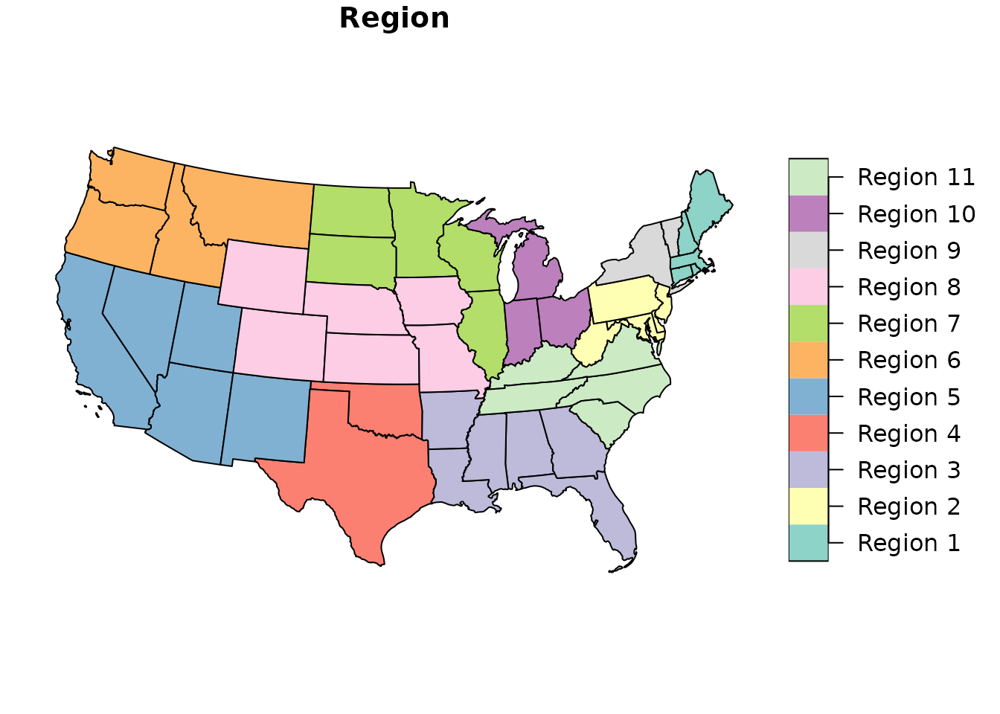
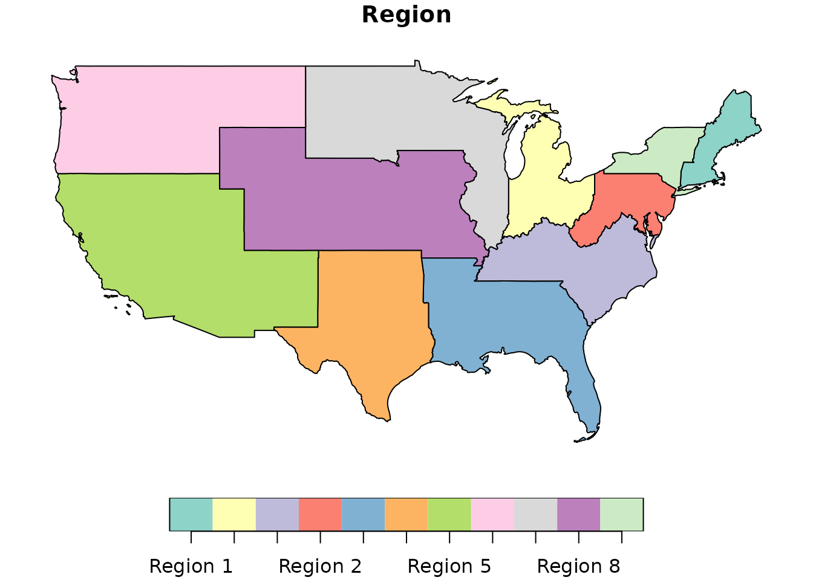
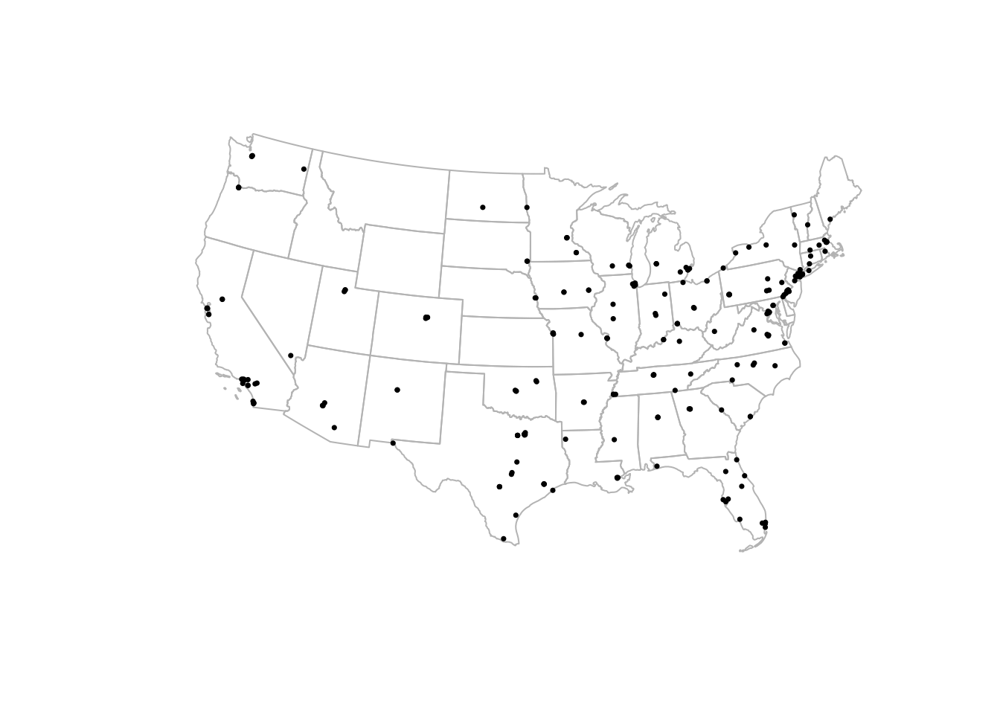
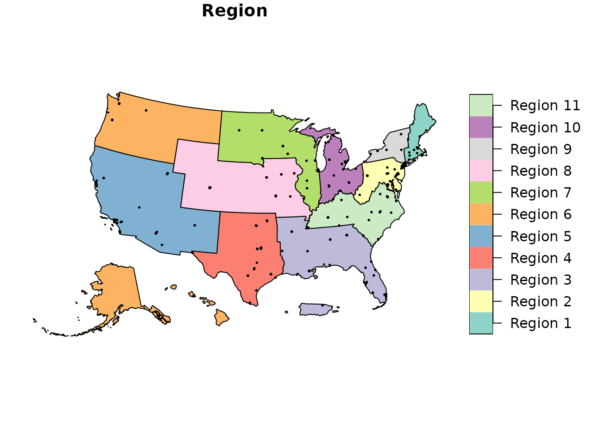
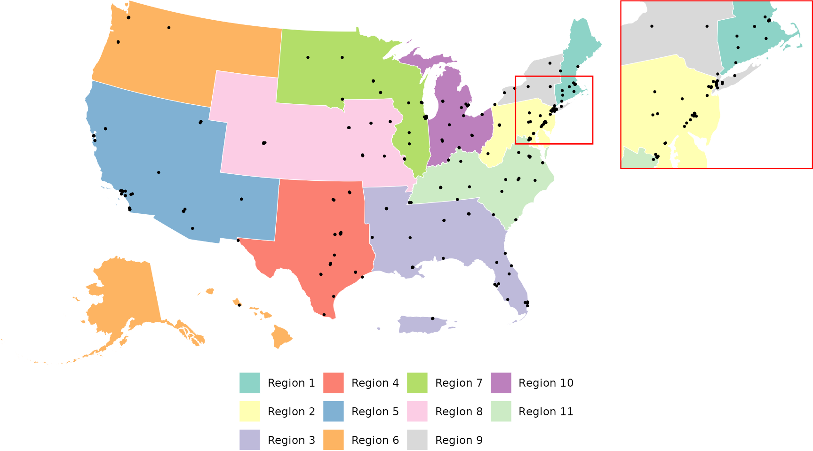
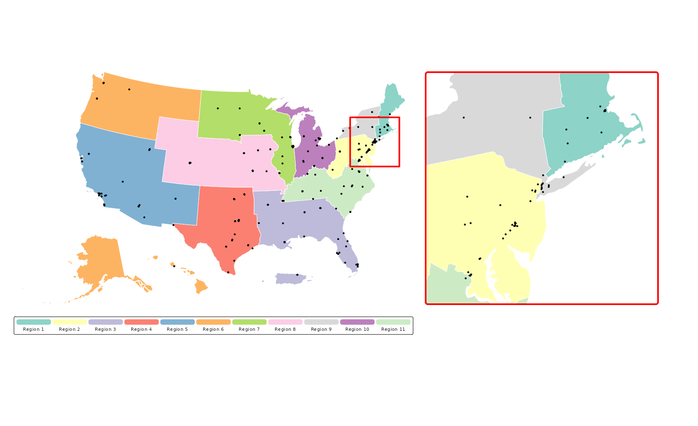
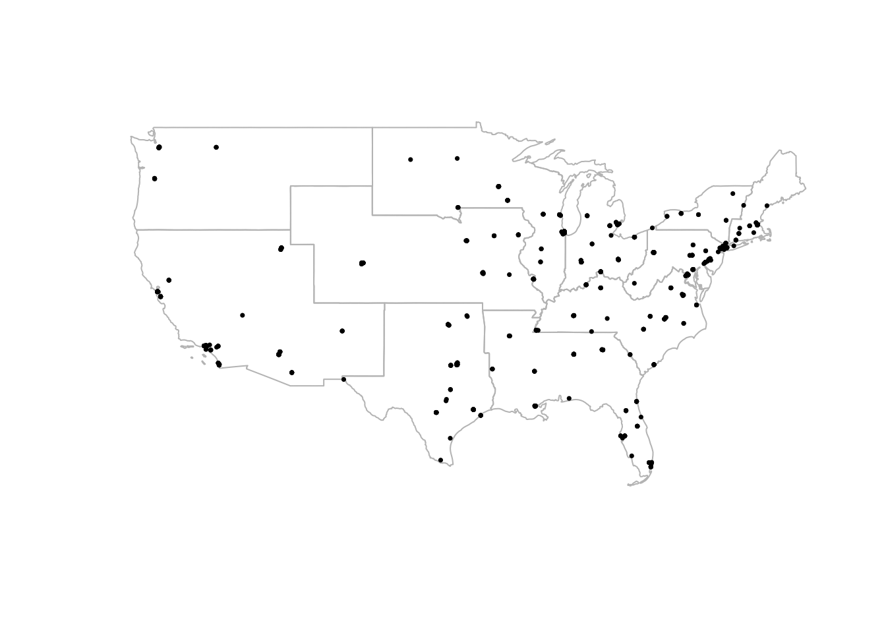
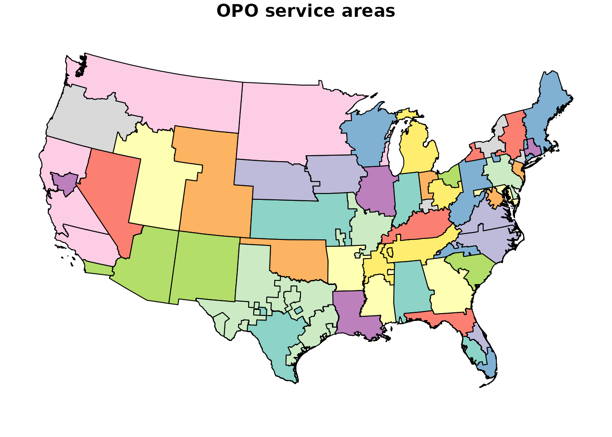
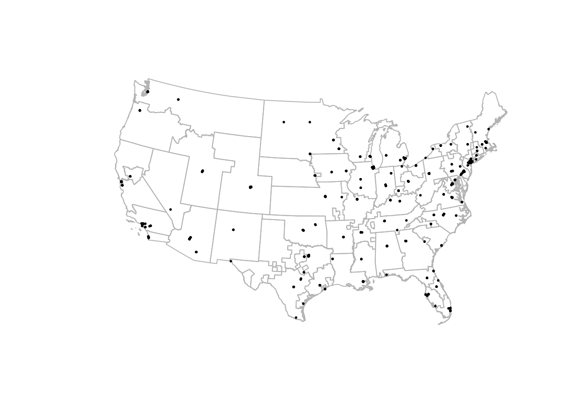

library(sRtr)
library(sf)
#> Linking to GEOS 3.14.1, GDAL 3.12.2, PROJ 9.7.1; sf_use_s2() is TRUE
library(dplyr)
#>
#> Attaching package: 'dplyr'
#> The following objects are masked from 'package:stats':
#>
#> filter, lag
#> The following objects are masked from 'package:base':
#>
#> intersect, setdiff, setequal, unionOverview
The sRtr package includes helper functions and spatial
datasets for working with transplant geography in R.
This vignette introduces basic mapping of:
- HRSA transplant center locations
- OPO service areas
- UNOS/OPTN regions
The examples use sf, which is the standard R package for
working with vector geographic data in R.
Coordinate reference systems
Spatial objects in sRtr are returned as sf
objects. For many transplant geography tasks, a projected coordinate
reference system is preferable to longitude/latitude because it allows
more appropriate distance, area, and overlay calculations.
The package commonly uses NAD83 / Conus Albers, EPSG:5070, for U.S. mapping workflows.
sf::st_crs(UNOS_regions_sf)
#> Coordinate Reference System:
#> User input: EPSG:5070
#> wkt:
#> PROJCRS["NAD83 / Conus Albers",
#> BASEGEOGCRS["NAD83",
#> DATUM["North American Datum 1983",
#> ELLIPSOID["GRS 1980",6378137,298.257222101,
#> LENGTHUNIT["metre",1]]],
#> PRIMEM["Greenwich",0,
#> ANGLEUNIT["degree",0.0174532925199433]],
#> ID["EPSG",4269]],
#> CONVERSION["Conus Albers",
#> METHOD["Albers Equal Area",
#> ID["EPSG",9822]],
#> PARAMETER["Latitude of false origin",23,
#> ANGLEUNIT["degree",0.0174532925199433],
#> ID["EPSG",8821]],
#> PARAMETER["Longitude of false origin",-96,
#> ANGLEUNIT["degree",0.0174532925199433],
#> ID["EPSG",8822]],
#> PARAMETER["Latitude of 1st standard parallel",29.5,
#> ANGLEUNIT["degree",0.0174532925199433],
#> ID["EPSG",8823]],
#> PARAMETER["Latitude of 2nd standard parallel",45.5,
#> ANGLEUNIT["degree",0.0174532925199433],
#> ID["EPSG",8824]],
#> PARAMETER["Easting at false origin",0,
#> LENGTHUNIT["metre",1],
#> ID["EPSG",8826]],
#> PARAMETER["Northing at false origin",0,
#> LENGTHUNIT["metre",1],
#> ID["EPSG",8827]]],
#> CS[Cartesian,2],
#> AXIS["easting (X)",east,
#> ORDER[1],
#> LENGTHUNIT["metre",1]],
#> AXIS["northing (Y)",north,
#> ORDER[2],
#> LENGTHUNIT["metre",1]],
#> USAGE[
#> SCOPE["Data analysis and small scale data presentation for contiguous lower 48 states."],
#> AREA["United States (USA) - CONUS onshore - Alabama; Arizona; Arkansas; California; Colorado; Connecticut; Delaware; Florida; Georgia; Idaho; Illinois; Indiana; Iowa; Kansas; Kentucky; Louisiana; Maine; Maryland; Massachusetts; Michigan; Minnesota; Mississippi; Missouri; Montana; Nebraska; Nevada; New Hampshire; New Jersey; New Mexico; New York; North Carolina; North Dakota; Ohio; Oklahoma; Oregon; Pennsylvania; Rhode Island; South Carolina; South Dakota; Tennessee; Texas; Utah; Vermont; Virginia; Washington; West Virginia; Wisconsin; Wyoming."],
#> BBOX[24.41,-124.79,49.38,-66.91]],
#> ID["EPSG",5070]]Built-in spatial datasets
The package includes state-level UNOS/OPTN region geometries and transplant center point locations.
UNOS_regions_sf
#> Simple feature collection with 52 features and 2 fields
#> Geometry type: MULTIPOLYGON
#> Dimension: XY
#> Bounding box: xmin: -6293423 ymin: -79515.28 xmax: 3320182 ymax: 6198355
#> Projected CRS: NAD83 / Conus Albers
#> # A tibble: 52 × 3
#> Region State geometry
#> * <chr> <chr> <MULTIPOLYGON [m]>
#> 1 Region 1 Connecticut (((1841099 2228944, 1855809 2243706, 1848123 2…
#> 2 Region 1 Maine (((2138226 2628218, 2141401 2631393, 2145105 2…
#> 3 Region 1 Massachusetts (((2111139 2321239, 2117588 2323418, 2126584 2…
#> 4 Region 1 New Hampshire (((1885488 2441514, 1886564 2445437, 1884951 2…
#> 5 Region 1 Rhode Island (((2006463 2276322, 2007521 2284789, 2011226 2…
#> 6 Region 2 Delaware (((1705278 2038007, 1706137 2042296, 1708323 2…
#> 7 Region 2 District of Columbia (((1610777 1928086, 1616046 1936147, 1619950 1…
#> 8 Region 2 Maryland (((1722285 1847165, 1725330 1849095, 1728392 1…
#> 9 Region 2 New Jersey (((1725281 2031759, 1726883 2034105, 1728061 2…
#> 10 Region 2 Pennsylvania (((1287712 2093650, 1286266 2102574, 1283800 2…
#> # ℹ 42 more rows
transplant_centers_sf
#> Simple feature collection with 254 features and 2 fields
#> Geometry type: POINT
#> Dimension: XY
#> Bounding box: xmin: -6126888 ymin: 19010.26 xmax: 3229480 ymax: 3014265
#> Projected CRS: NAD83 / Conus Albers
#> # A tibble: 254 × 3
#> OTCName OTCCode geometry
#> * <chr> <chr> <POINT [m]>
#> 1 MUSC Children's Hospital SCCH (1487799 1205313)
#> 2 Medical University of South Carolina SCMU (1487787 1205334)
#> 3 Avera McKennan Hospital SDMK (-57359.26 2282511)
#> 4 Sanford Health/USD Medical Center SDSV (-59647.51 2282589)
#> 5 Baptist Memorial Hospital TNBM (554364.2 1359349)
#> 6 Erlanger Medical Center TNEM (966708.3 1386691)
#> 7 Le Bonheur Children's Medical Center TNLB (538749.4 1359675)
#> 8 Methodist University Hospital TNMH (540047.1 1359139)
#> 9 Centennial Medical Center TNPV (818293 1495462)
#> 10 Saint Thomas Hospital TNST (815399.8 1492365)
#> # ℹ 244 more rowsPlotting UNOS/OPTN regions
The object UNOS_regions_sf contains state-level
geometries with a Region field. It includes Alaska and
Hawaii (Region 6) and Puerto Rico (Region 3), which stretch a national
map far beyond the contiguous states, so the maps in this section leave
them out.
Region is stored as text, so a plot sorts it
alphabetically (Region 1, Region 10, Region 11, Region 2, …). Convert it
to a factor first so the legend runs from Region 1 to Region 11.
region_levels <- paste("Region", 1:11)
noncontiguous <- c("Alaska", "Hawaii", "Puerto Rico")
unos_regions <- UNOS_regions_sf[!UNOS_regions_sf$State %in% noncontiguous, ]
unos_regions$Region <- factor(unos_regions$Region, levels = region_levels)
plot(unos_regions["Region"], key.pos = 4)
To plot dissolved region boundaries, use
get_hrsa_optn_regions();
noncontiguous = "exclude" leaves out Alaska, Hawaii and
Puerto Rico. Putting the legend on the right (key.pos = 4)
leaves room to label all 11 regions.
optn_regions <- get_hrsa_optn_regions(noncontiguous = "exclude")
optn_regions$Region <- factor(optn_regions$Region, levels = region_levels)
plot(optn_regions["Region"], key.pos = 4)
Plotting transplant centers
The package can download transplant center locations from the HRSA ArcGIS REST service.
centers <- get_hrsa_transplant_centers()For a vignette, it is often better to use the built-in example data rather than requiring an internet connection.
plot(sf::st_geometry(unos_regions), border = "grey70")
plot(sf::st_geometry(transplant_centers_sf), add = TRUE, pch = 16, cex = 0.5)
The first layer drawn sets the map’s frame, here the contiguous states and the District of Columbia. Centers outside that frame, such as those in Hawaii and Puerto Rico, are not shown. To list them:
frame <- sf::st_as_sfc(sf::st_bbox(unos_regions))
outside <- lengths(sf::st_intersects(transplant_centers_sf, frame)) == 0
transplant_centers_sf$OTCName[outside]
#> [1] "The Queen's Medical Center"
#> [2] "Cardiovascular Center of Puerto Rico and the Caribbean"
#> [3] "Auxilio Mutuo Hospital"National maps with Alaska, Hawaii and Puerto Rico
Region 6 includes Alaska and Hawaii, and Region 3 includes Puerto
Rico. Hawaii has one transplant center, Puerto Rico two and Alaska none.
On a national map these areas sit far from the contiguous states, so
get_hrsa_optn_regions(noncontiguous = "shift") moves them
below the contiguous states, and shift_noncontiguous()
applies the same move to any other layer, such as the transplant
centers. The shifted coordinates are positions on a map, not locations:
use them for drawing only, never for spatial joins or distances.
regions_shifted <- get_hrsa_optn_regions(noncontiguous = "shift")
regions_shifted$Region <- factor(regions_shifted$Region, levels = region_levels)
centers_shifted <- shift_noncontiguous(transplant_centers_sf)
plot(regions_shifted["Region"], key.pos = 4, reset = FALSE)
plot(sf::st_geometry(centers_shifted), add = TRUE, pch = 16, cex = 0.4)
An inset for the Washington-to-Boston corridor
Between Washington and Boston, transplant centers sit so close together that they overlap on a national map. An inset repeats that corridor at a larger scale. The corridor is given in longitude and latitude, then projected; taking the bounding box of the projected box makes sure the inset covers the whole corridor.
corridor_box <- sf::st_bbox(
c(xmin = -77.6, ymin = 38.6, xmax = -70.5, ymax = 42.9),
crs = sf::st_crs(4326)
) |>
sf::st_as_sfc() |>
sf::st_transform(5070) |>
sf::st_bbox()
region_colors <- grDevices::palette.colors(11, "Set 3")With ggplot2
ggplot2 has no inset of its own, so the corridor is drawn as a second
plot and placed beside the national map with
annotation_custom(), at about two and a half times the
national scale. A red box marks the corridor on the national map.
library(ggplot2)
map_layers <- list(
geom_sf(data = regions_shifted, aes(fill = Region), color = "white", linewidth = 0.2),
geom_sf(data = centers_shifted, size = 0.5),
scale_fill_manual(values = region_colors, drop = FALSE)
)
corridor_map <- ggplot() +
map_layers +
coord_sf(
crs = 5070, datum = NA, expand = FALSE,
xlim = corridor_box[c("xmin", "xmax")],
ylim = corridor_box[c("ymin", "ymax")]
) +
theme_void() +
theme(
legend.position = "none",
panel.border = element_rect(color = "red", fill = NA, linewidth = 0.8)
)
# Place the inset to the right of the national map, keeping its shape
national <- sf::st_bbox(regions_shifted)
national_width <- national[["xmax"]] - national[["xmin"]]
inset_width <- 0.32 * national_width
inset_height <- inset_width *
(corridor_box[["ymax"]] - corridor_box[["ymin"]]) /
(corridor_box[["xmax"]] - corridor_box[["xmin"]])
inset_x <- national[["xmax"]] + 0.03 * national_width
inset_y <- national[["ymax"]] - inset_height
ggplot() +
map_layers +
annotate(
"rect",
xmin = corridor_box[["xmin"]], xmax = corridor_box[["xmax"]],
ymin = corridor_box[["ymin"]], ymax = corridor_box[["ymax"]],
fill = NA, color = "red", linewidth = 0.5
) +
annotation_custom(
ggplotGrob(corridor_map),
xmin = inset_x, xmax = inset_x + inset_width,
ymin = inset_y, ymax = inset_y + inset_height
) +
coord_sf(
crs = 5070, datum = NA, expand = FALSE,
# A little room past the inset so its frame is not clipped
xlim = c(national[["xmin"]], inset_x + 1.01 * inset_width),
ylim = c(national[["ymin"]], national[["ymax"]] + 0.01 * inset_height)
) +
labs(fill = NULL) +
theme_void() +
theme(legend.position = "bottom")
With tmap
tmap draws the inset itself with tm_inset() and marks
the corridor on the national map. This needs tmap 4.2 or later, the
first version whose tm_inset() takes the frame colors.
library(tmap)
tm_shape(regions_shifted) +
tm_polygons(
fill = "Region",
fill.scale = tm_scale_categorical(values = region_colors),
fill.legend = tm_legend(
title = "",
orientation = "landscape",
position = tm_pos_out("center", "bottom")
),
col = "white",
lwd = 0.5
) +
tm_shape(centers_shifted) +
tm_dots(size = 0.1) +
tm_inset(
corridor_box,
# Outside the map, to the right, and large enough to separate the centers
position = tm_pos_out("right", "center"),
width = 16,
height = 16,
box_frame.color = "red",
main_frame.color = "red"
) +
tm_layout(frame = FALSE)
#> [plot mode] fit legend/component: Some legend items or map compoments do not
#> fit well, and are therefore rescaled.
#> ℹ Set the tmap option `component.autoscale = FALSE` to disable rescaling.
Downloading current HRSA transplant center locations
To retrieve the current HRSA transplant center layer:
Base plot() does not reproject layers. A layer added
with add = TRUE must already use the coordinate reference
system of the first layer drawn, or it is drawn in the wrong place or
not at all. The same holds for spatial joins, which need both layers in
one coordinate reference system. So transform the downloaded centers to
match optn_regions before using them together:
centers <- get_hrsa_transplant_centers() |>
sf::st_transform(sf::st_crs(optn_regions))
centers |>
dplyr::select(OTC_NM, OTC_CITY, STATE_ABBR, OPO_PROVIDER_NM, Service_Lst)
#> Simple feature collection with 791 features and 5 fields
#> Geometry type: POINT
#> Dimension: XY
#> Bounding box: xmin: -157.8552 ymin: 18.41789 xmax: -66.0577 ymax: 47.66421
#> Geodetic CRS: WGS 84
#> First 10 features:
#> OTC_NM OTC_CITY STATE_ABBR OPO_PROVIDER_NM
#> 1 Children's of Alabama Birmingham AL Alabama Organ Center
#> 2 Children's of Alabama Birmingham AL Alabama Organ Center
#> 3 Children's of Alabama Birmingham AL Alabama Organ Center
#> 4 University of Alabama Hospital Birmingham AL Alabama Organ Center
#> 5 University of Alabama Hospital Birmingham AL Alabama Organ Center
#> 6 University of Alabama Hospital Birmingham AL Alabama Organ Center
#> 7 University of Alabama Hospital Birmingham AL Alabama Organ Center
#> 8 University of Alabama Hospital Birmingham AL Alabama Organ Center
#> 9 University of Alabama Hospital Birmingham AL Alabama Organ Center
#> 10 Birmingham VA Medical Center Birmingham AL Alabama Organ Center
#> Service_Lst
#> 1 Heart, Kidney, Liver
#> 2 Heart, Kidney, Liver
#> 3 Heart, Kidney, Liver
#> 4 Heart, Intestine, Kidney, Liver, Lung, Pancreas, Pancreas Islet
#> 5 Heart, Intestine, Kidney, Liver, Lung, Pancreas, Pancreas Islet
#> 6 Heart, Intestine, Kidney, Liver, Lung, Pancreas, Pancreas Islet
#> 7 Heart, Intestine, Kidney, Liver, Lung, Pancreas, Pancreas Islet
#> 8 Heart, Intestine, Kidney, Liver, Lung, Pancreas, Pancreas Islet
#> 9 Heart, Intestine, Kidney, Liver, Lung, Pancreas, Pancreas Islet
#> 10 Kidney
#> geometry
#> 1 POINT (-86.80482 33.50352)
#> 2 POINT (-86.80482 33.50352)
#> 3 POINT (-86.80482 33.50352)
#> 4 POINT (-86.81464 33.48393)
#> 5 POINT (-86.81464 33.48393)
#> 6 POINT (-86.81464 33.48393)
#> 7 POINT (-86.81464 33.48393)
#> 8 POINT (-86.81464 33.48393)
#> 9 POINT (-86.81464 33.48393)
#> 10 POINT (-86.80125 33.50508)A simple map:
plot(sf::st_geometry(optn_regions), border = "grey70")
plot(sf::st_geometry(centers), add = TRUE, pch = 16, cex = 0.5)
Plotting OPO service areas
The HRSA service also includes Organ Procurement Organization service area geography.
The detailed OPO service-area layer can be downloaded with:
opo_areas <- get_hrsa_opo_service_areas()The layer includes the OPOs serving Alaska, Hawaii and Puerto Rico, which stretch a national map, so crop it to the contiguous states before plotting. There are more than 50 OPOs, too many for a legend, so the plot leaves the key out. Colors repeat across OPOs; the black borders separate them.
opo_contiguous <- opo_areas |>
sf::st_make_valid() |>
sf::st_transform(sf::st_crs(unos_regions)) |>
sf::st_crop(sf::st_bbox(unos_regions))
#> Warning: attribute variables are assumed to be spatially constant throughout
#> all geometries
plot(opo_contiguous["OPO_PROVIDER_NM"], key.pos = NULL, main = "OPO service areas")
For a less cluttered map, draw only the boundaries and overlay transplant centers.
plot(sf::st_geometry(opo_contiguous), border = "grey70")
plot(
sf::st_geometry(sf::st_transform(centers, sf::st_crs(opo_contiguous))),
add = TRUE, pch = 16, cex = 0.4
)
Adding state outlines with tigris
The tigris package is useful for adding Census boundary
layers, such as states or counties.
library(tigris)
states <- tigris::states(cb = TRUE, year = 2023) |>
sf::st_transform(sf::st_crs(optn_regions))
plot(sf::st_geometry(states), border = "grey80")
plot(sf::st_geometry(optn_regions), add = TRUE, border = "black", lwd = 2)
plot(
sf::st_geometry(sf::st_transform(transplant_centers_sf, sf::st_crs(states))),
add = TRUE, pch = 16, cex = 0.4
)Filtering by organ or service list
The HRSA transplant center layer includes a Service_Lst
field. Depending on the analysis, this can be used to identify centers
that list specific transplant services.
kidney_centers <- centers |>
dplyr::filter(grepl("Kidney", Service_Lst, ignore.case = TRUE))
plot(sf::st_geometry(optn_regions), border = "grey70")
plot(sf::st_geometry(kidney_centers), add = TRUE, pch = 16, cex = 0.5)Working with geometries
Because these are sf objects, they can be used with
standard spatial operations.
For example, you can check which transplant centers fall within a
UNOS/OPTN region. For a join, use the regions at their real locations
with noncontiguous = "include", so centers in Hawaii and
Puerto Rico are assigned to Regions 6 and 3 rather than to none.
regions_all <- get_hrsa_optn_regions(noncontiguous = "include")
centers_with_region <- sf::st_join(
sf::st_transform(centers, sf::st_crs(regions_all)),
regions_all |> dplyr::select(Region)
)
# The HRSA layer has one row per center and organ program, so count each
# center once
centers_with_region |>
sf::st_drop_geometry() |>
dplyr::distinct(OTC_NM, Region) |>
dplyr::count(Region, sort = TRUE)
#> Region n
#> 1 Region 2 34
#> 2 Region 5 33
#> 3 Region 3 31
#> 4 Region 4 30
#> 5 Region 11 26
#> 6 Region 7 22
#> 7 Region 10 20
#> 8 Region 8 19
#> 9 Region 9 16
#> 10 Region 1 14
#> 11 Region 6 9Notes
The HRSA transplant center and OPO functions download public GIS layers from HRSA. These layers may change over time as HRSA updates the source data. On the package website, the maps that use them are drawn from HRSA’s layers at the time the site was last built.
The built-in UNOS_regions_sf object is included with the
package and is useful for reproducible examples and basic region
mapping.
Next steps
- Coverage gain: estimate how much of a population additional centers would cover.